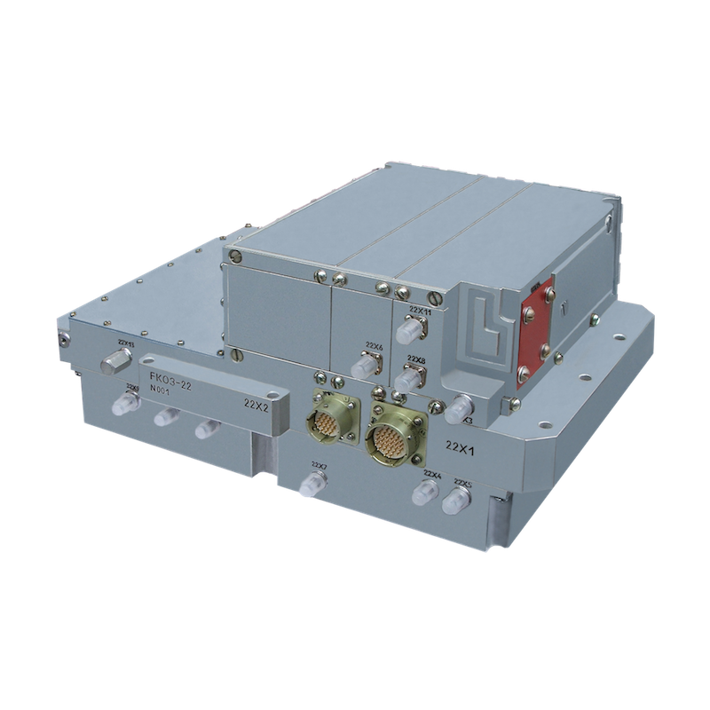

UM511010
A multifunctional frequency synthesizer with a low level of frequency and amplitude fluctuations intended for operation in airborne radar stations for forming a frequency grid of output signals in the centimeter range and a grid of heterodyne frequencies corresponding to each frequency of the output signal, as well as the frequency of the second local oscillator and reference frequencies.
The synthesizer works in the following modes:
The synthesizer is made on a modern element base in a hybrid-integrated version, equipped with an integrated monitoring system with the issuance of fault signals in TTL levels.
The module has high stability and reliability over a wide range of temperatures, is resistant to a wide range of mechanical and climatic factors.

| number of operating frequencies | 18 |
| output power per output, mW | 400-700 |
| spectral power density of the amplitude noise of the output signal, dB/Hz | -125 |
| power spectral density of the phase noise of the output signal when detached from the carrier by: | |
| 2 kHz, dB/Hz | -104 |
| 10 kHz, dB/Hz | -120 |
| 25 kHz, dB/Hz | -130 |
| 170 kHz, dB/Hz | -135 |
| switching time of output operating frequencies, μs | 40 |
| the relative level of the parasitic components when detached from the carrier by: | |
| ±(0,2-10,0) MHz | -90 |
| ±(10-100) MHz | -85 |
| ±(100-600) MHz | -80 |
| ±(600-1350) MHz | -60 |